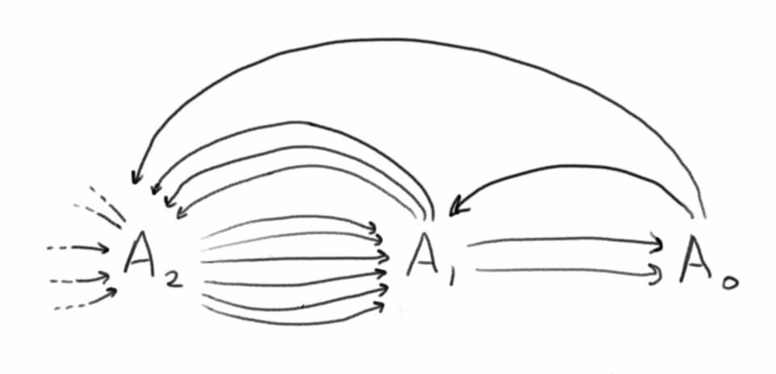
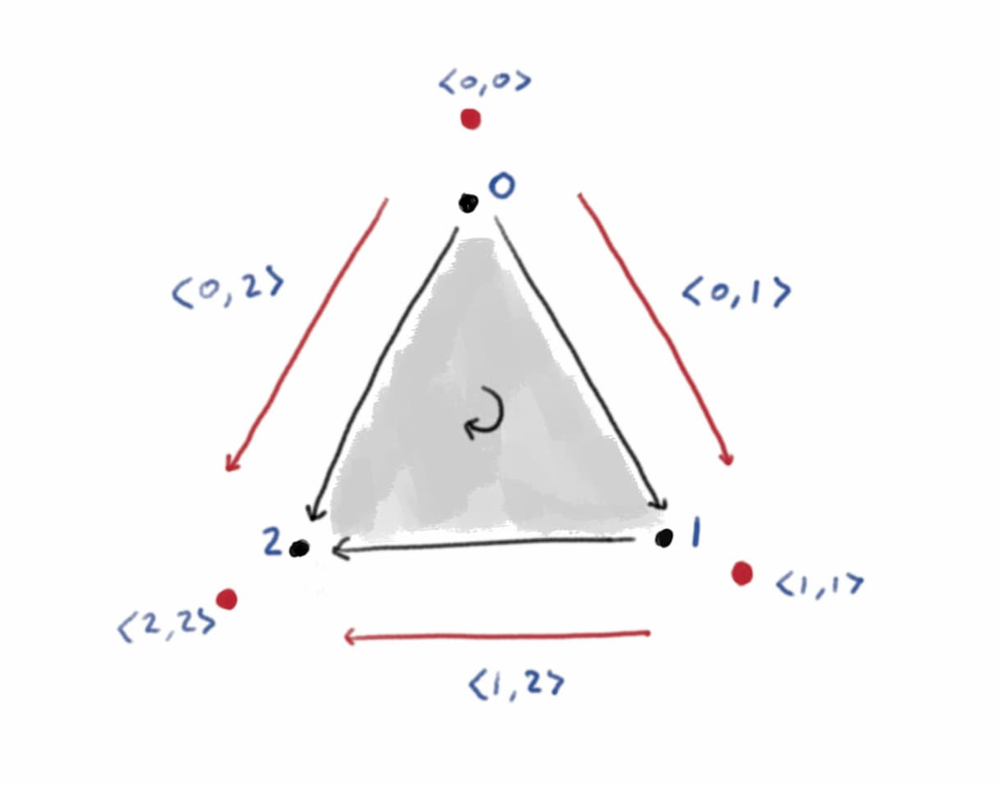
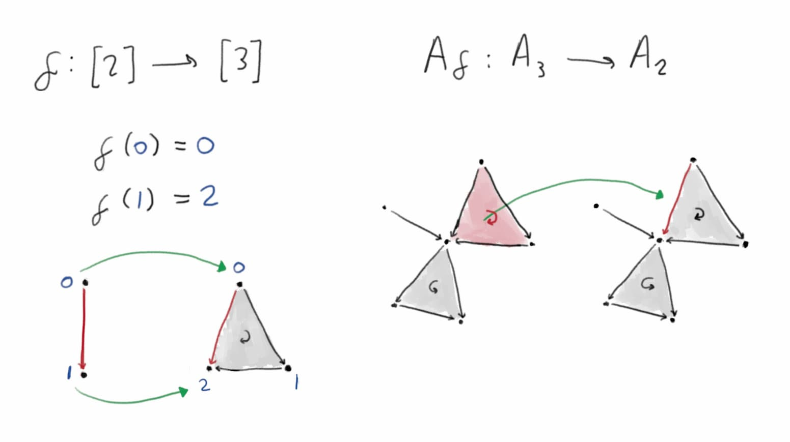
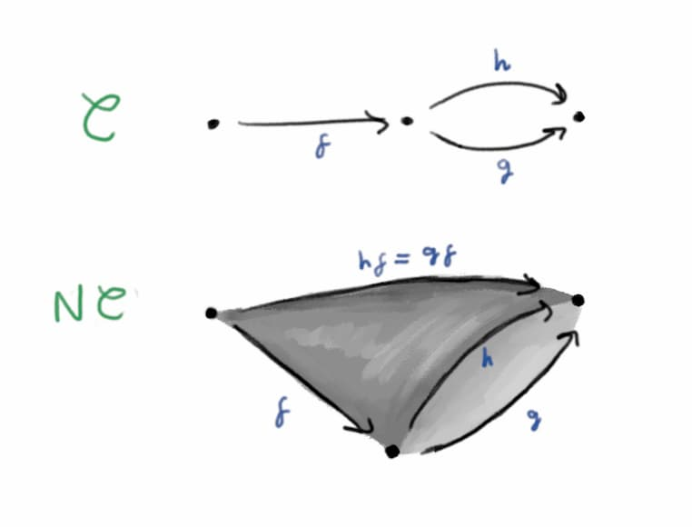
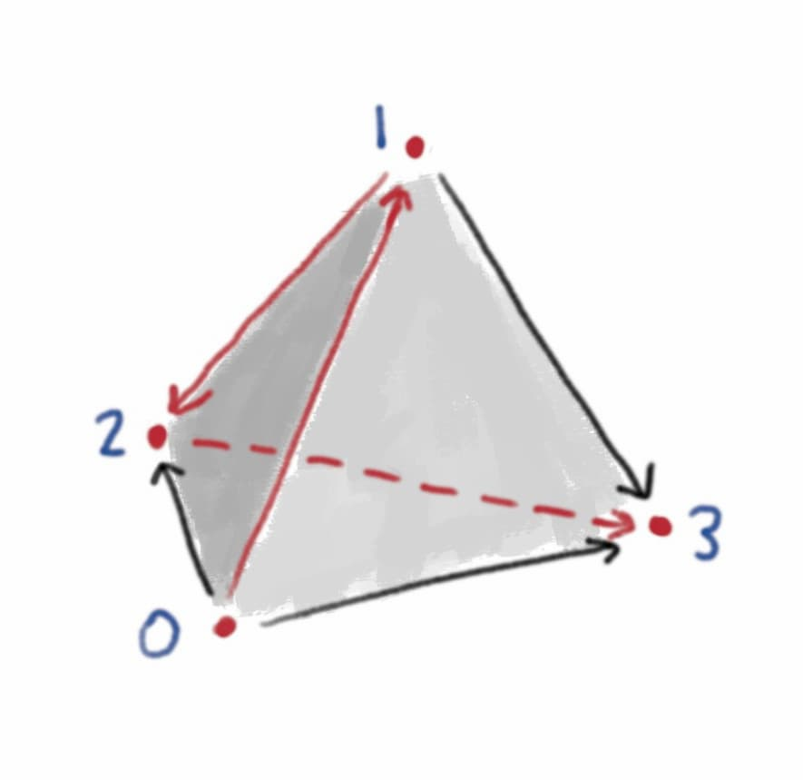
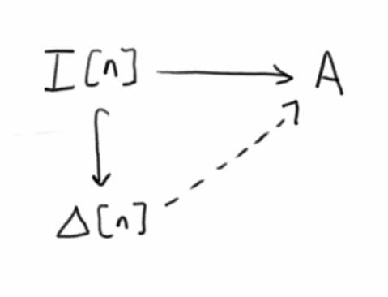
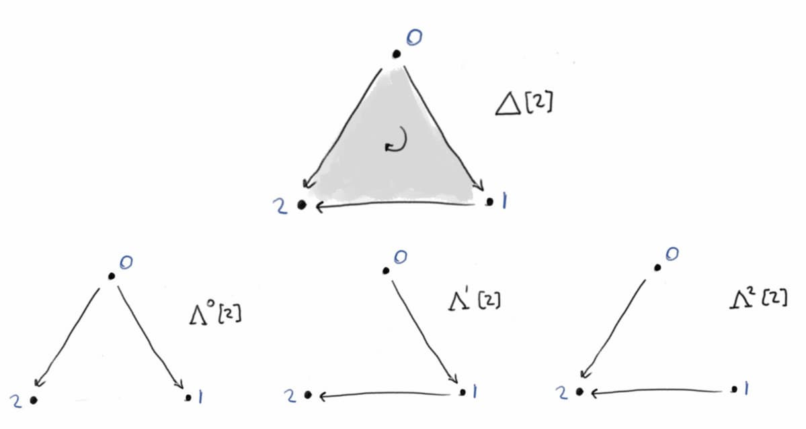
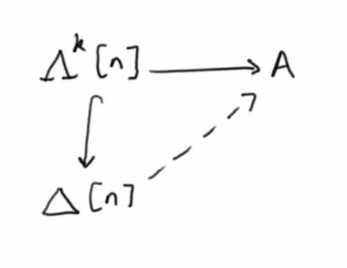

A category describes a collection of objects with composable morphisms between them. In a 2-category you also have 2-morphisms between morphisms with matching domain and codomain. For example there is a 2-category \(\text{Cat}\) with objects given by (small) categories, 1-morphisms given by functors between categories, and 2-morphisms given by natural transformations between functors. Continuing this pattern gives the idea of an \(n\)-category, where you have objects, 1-morphisms, 2-morphisms, and so on up to \(n\)-morphisms. The ultimate such structure is an \(\infty\)-category, with a never ending sequence of morphisms between morphisms between … between morphisms.
In a weak \(n\)- or \(\infty\)-category, associativity and identity laws only hold up to (coherent) isomorphism. In fact we don’t even need to require composition of morphisms to be uniquely defined! We only ask that all possible composites are uniquely isomorphic (where uniquely is interpreted in an appropriate higher categorical sense).
Weak higher categories are generally hard to understand, or even define correctly, and are currently an area of active research. However an especially well-behaved special case is that of a weak \((\infty, 1)\)-category, where all \(k\)-morphisms for \(k > 1\) are equivalences. Quasi-categories are one of the earliest and most important ways to formalise the idea of a weak \((\infty, 1)\)-category. The definition of a quasi-category turns out to be less horrendously complicated than you might expect! The key is to understand simplicial sets, which are a kind of combinatorial approach to shape. Then a quasi-category is a simplicial set satisfying a condition that asks for certain “compositions of morphisms” to exist. We’ll start with a quick overview of simplicial sets, emphasising geometric intuition, before explaining the precise definition of a quasi-category.
Simplicial sets
The idea of a simplicial set is to describe a shape by building it up out of simplices – points, lines, triangles, and so on. Moreover each simplex should come with an ordering on its vertices, so for example edges have a direction and triangles have an orientation.

How can we describe this mathematically? For each \(n \ge 0\) we can define a set \(A_n\) of \(n\)-simplices, so \(A_0\) is the set of vertices, \(A_1\) is the set of edges, \(A_2\) is the set of triangles. But we also need to describe how the simplices relate to one another. If I hand you an edge from \(A_1\) you should be able to find its source and target vertices in \(A_0\), so we need two functions \(A_1 \to A_0\) specifying the source and target vertices of each edge. Similarly we need three functions \(A_2 \to A_1\) specifying the vertices of each triangle.

Now things get a little subtle. You might think we need three functions \(A_3 \to A_2\) specifying the three edges of each triangle. But it turns out things work better if we think of triangles as having 6 edges! Let me explain. We define a function \(A_0 \to A_1\), which assigns a degenerate edge to every vertex – the idea is that you can also think of a vertex as a zero length edge from the vertex to itself. And now a triangle has its three ordinary edges, and also a degenerate edge corresponding to each vertex. So we need six functions \(A_3\) to \(A_2\) specifying the six edges of each triangle.

And so on for higher dimensions. So we can describe a simplicial set \(A\) by a collection of sets \(A_n\) of \(n\)-simplices, with lots of functions between them describing how they sit inside one another. And these functions should satisfy some obvious relations – for example if you start with a triangle, find an edge of the triangle, and then find a vertex of that edge, that should be the same as directly finding the corresponding vertex of the triangle. Here category theory comes to our rescue, by giving us a compact way to describe how these functions should relate.
Let \(\Delta\) be the category with objects the finite non-empty ordered sets \[[n] = \{0, 1, \dotsc, n\}\] and morphisms given by weakly order-preserving functions (i.e. a morphism \(f : [m] \to [n]\) is a function \(f : \{0, \dotsc, m\} \to \{0, \dotsc, n\}\) such that \(f(i) \le f(j)\) for all \(i \le j\)). Note that \([n]\) can be interpreted as a category with objects \(0, \dotsc, n\) and a unique morphism \(i \to j\) for every \(i \le j\), and from this perspective \(\Delta\) is a full subcategory of \(\text{Cat}\).
Definition (simplicial set)
A simplicial set is a functor \[A : \Delta^\text{op} \to \text{Set} \text{.}\] Geometrically, we interpret \(A([n])\) (usually denoted \(A_n\)) as the set of \(n\)-dimensional simplices making up the shape. We interpret a morphism \(f : [m] \to [n]\) (i.e. an order-preserving function \(\{0, \dotsc, m\} \to \{0, \dotsc, n\}\)) as describing a way of embedding an \(m\)-simplex into an \(n\)-simplex. Then the function \(A(f) : A_n \to A_m\) takes an \(n\)-simplex from the set and gives the corresponding \(m\)-simplex living inside it.

We write \(\text{sSet}\) for the category \(\text{Set}^{\Delta^\text{op}}\) of simplicial sets. A morphism between two simplicial sets \(A\) and \(B\) is given by a natural transformation \(\alpha\) between the functors. That is, for each \(n\) we have a map \(\alpha_{[n]} : A_n \to B_n\) taking \(n\)-simplices of \(A\) to \(n\)-simplices of \(B\), in a way that respects the relationships between the simplices (for example a face of a simplex in \(A\) is mapped to the correpsonding face of the image of the simplex in \(B\)).
We write \(\Delta[n]\) for the standard \(n\)-simplex, which is given by the representable functor \(\Delta({-}, [n])\).
The nerve of a category
At the moment it’s probably unclear how a simplicial set could be anything like a category. We’ll start by seeing how to represent an ordinary category as a simplicial set, via the nerve construction. After that we’ll explain how to generalise this to quasi-categories.
The idea is that a category already looks a bit like a simplicial set, with a vertex for each object and a \(1\)-simplex for each morphism. To form the nerve, we also add in an \(n\)-simplex for each string of \(n\) composable morphisms.
Definition (nerve of a category)
Let \(\mathcal{C}\) a category. We define the nerve \(N\mathcal{C}\) to be the restriction of the representable functor \[\text{Cat}({-}, \mathcal{C}) : \text{Cat}^\text{op} \to \text{Set}\] to \(\Delta\) (considering \(\Delta\) to be a full subcategory of \(\text{Cat}\)). So the set \(N\mathcal{C}_n\) of \(n\)-simplices is the set of functors \([n] \to \mathcal{C}\), which we can identify as the set of sequences of \(n\) composable morphisms in \(\mathcal{C}\).

In fact the nerve construction gives a fully faithful embedding of \(\text{Cat}\) inside \(\text{sSet}\) – there’s a bijection between simplicial maps \(N\mathcal{C} \to N\mathcal{D}\) and functors \(\mathcal{C} \to \mathcal{D}\).
We would like to characterise those simplicial sets which are (isomorphic to) the nerve of some category. The spine \(I[n]\) of the standard \(n\)-simplex is the simplicial complex with vertices \(\{0, \dotsc, n\}\) and (non-degenerate) edges \(\langle 0, 1 \rangle, \dotsc, \langle n-1, n \rangle\).

The spine \(I[n]\) lives inside the standard \(n\)-simplex \(\Delta[n]\) in a natural way. Now it turns out that a simplicial set \(A\) is (isomorphic to) the nerve of some category iff every map from a spine \(I[n] \to A\) extends uniquely along the natural inclusion to a map from an \(n\)-simplex \(\Delta[n] \to A\).

Checking this is a nice exercise. The rough idea is that a map \(I[n] \to N\mathcal{C}\) corresponds to a sequence of \(n\) edges in \(N\mathcal{C}\), which corresponds to a sequence of \(n\) composable morphisms in \(\mathcal{C}\), which corresponds to an \(n\)-simplex in \(N \mathcal{C}\).
Quasi-categories
The definition of a quasi-category is a generalisation of this idea. To get a simplicial set describing a category, we ask for every spine to extend uniquely to a simplex, since a sequence of (\(1\)-)morphisms in a category has a unique composite. In a weak \((\infty, 1)\)-category we don’t have uniquely defined composites, and we also want to handle composing arrangements of higher dimensional morphisms.
The \(k\)th horn of the standard \(n\)-simplex (\(0 \le k \le n\)), denoted \(\Lambda^k[n]\), is the largest simplicial set contained in \(\Delta[n]\) which does not include the face opposite the vertex \(k\). Geometrically, take an \(n\)-simplex and remove the interior and a face. A horn of the \(3\)-simplex really looks like a horn, while a horn of the \(2\)-simplex looks like two edges joined at a vertex.

We call \(\Lambda^k[n]\) an inner horn if \(0 < k < n\). For example the only inner horn of the 2-simplex is \(\Lambda^1[n]\), which looks like two arrows joined head to tail. Equipped with the concept of an inner horn, we can now finally state the definition of a quasi-category.
Definition (quasi-category)
A quasi-category is a simplicial set \(A\) in which every inner horn can be extended (not necessarily uniquely) to a simplex. That is, for every map \(\Lambda^k[n] \to A\) (\(0 < k < n\)), there exists an extension \(\Delta[n] \to A\) along the inclusion \(\Lambda^k[n] \hookrightarrow \Delta[n]\).

We’ve already met the easiest example of a quasi-category: the nerve of a category is a quasi-category. In fact it turns out that a quasi-category is isomorphic to the nerve of a category iff every inner horn has a unique extension to a simplex (similarly to our previous characterisation in terms of spines).
References and further reading
For a more detailed introduction to simplicial sets, focusing on geometric intuition, see Greg Friedman’s An elementary illustrated introduction to simplicial sets. For a more category theory focused guide, see Emily Riehl’s A Leisurely Introduction to Simplicial Sets, which also ends with the definition of a quasi-category.
Jacob Lurie wrote a nice two page article motivating the definition of a quasi-category (which he calls an \(\infty\)-category) called What is… an \(\infty\)-Category. I first learnt the definition in Emily Riehl and Dominic Verity’s Elements of \(\infty\)-Category Theory, which is also a great place to start learning how to actually do category theory in \(\infty\)-categories.